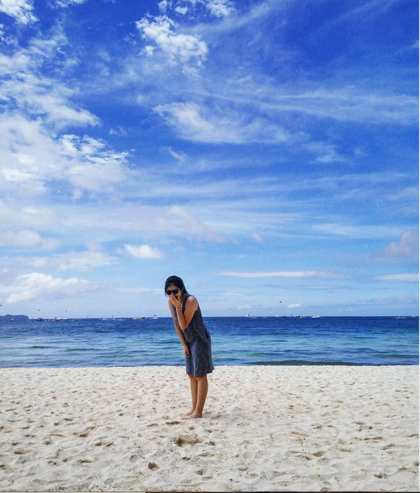

Travel
Traveling makes me relax. I've been to many countries such as Italy, Japan, Singapore, Malaysia.
The picture is one of my favorite places, Boracay Island, which is located in Philippines.
Cooking
I was working in the Taiwanese restuarant for one year. The first pork bao I made!
Music
Here's my favorite hillsong.
I like its melodies and feel touched every time hearing this: the Roaring Lion declared the grave has no claim on me.